- Modulo 1: Fundamentos de la programación
- Módulo 2: Estructuras y condicionales
- Módulo 3: Vectores
- Módulo 4: Funciones y eventos
- Módulo 5: ECMAScript 6
Fundamentos de la programación
Glosario:
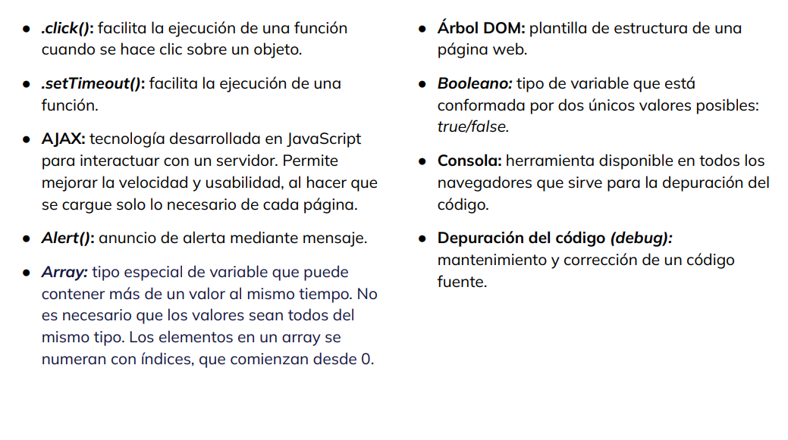 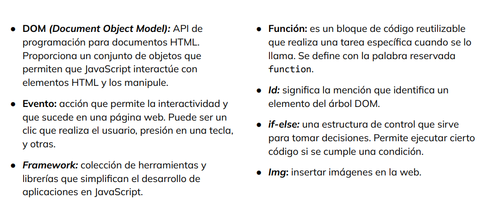 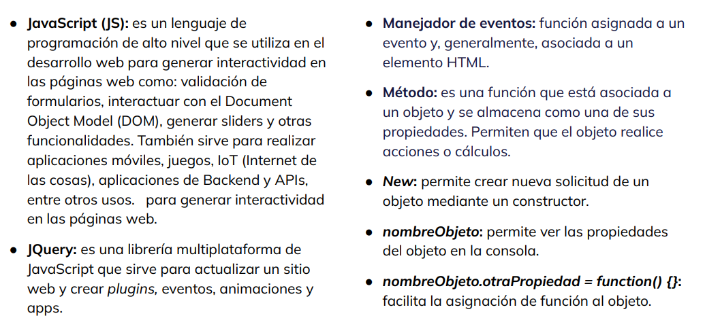 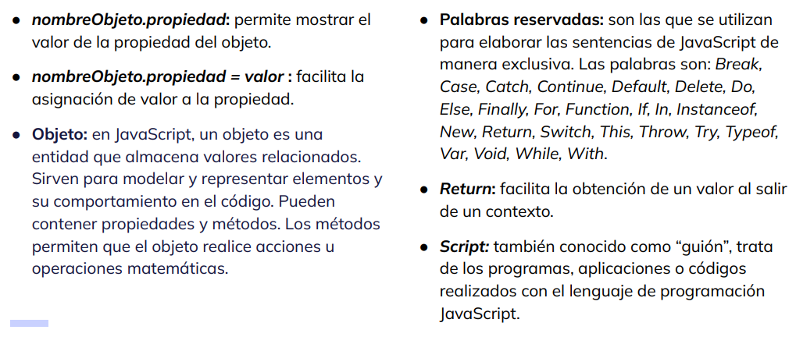 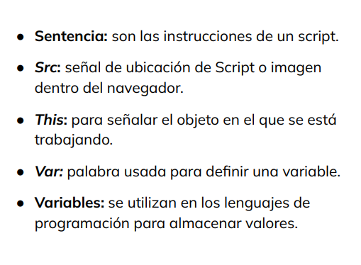Un programa es un conjunto de instrucciones que ejecuta un procesador de computadora. Todo programa tendrá un conjunto finito de instrucciones, que se van ejecutando 1 a 1 en cadena, hasta finalizar la ejecución.
Una aplicación es un programa específico que resuelve un problema concreto. Por ejemplo: aplicaciones contables, de gestión de RR.HH, aplicaciones de liquidación de sueldos. Una de las características principales de las aplicaciones es la interacción directa con el usuario. Un sistema está formado por un conjunto de programas, involucra también herramientas de hardware (partes físicas: monitores, teclados, impresoras, etc.), redes de comunicación, bases de datos, servidores.
Tipos de aplicaciones:
Aplicaciones de escritorio: Son aquellas que típicamente corren en un sistema Windows y pueden ser abiertas yendo a la lista de programas instalados en el sistema operativo. Trabajan con ventanas, tienen un menú en la parte superior (con opciones tales como: archivos, herramientas, configuración, y otros). Estas aplicaciones permiten ingresar datos, obtener reportes de datos, etc. Existe mucha interacción con el teclado y el mouse de la computadora. El botón secundario del mouse suele generar el conocido menú contextual, muy útil ya que representa un atajo para la ejecución de una funcionalidad específica. Podemos decir que las aplicaciones de escritorio son las “aplicaciones tradicionales” de interfaz gráfica.
Aplicaciones de consola: Son las que utilizan una ventana de Línea de comandos o Terminal, como salida. Quizás, esta definición no ayude demasiado a entender de qué se trata, pero básicamente Visual Basic.Net, C#, Java, y Node.js, utilizan este tipo de consola para poder programar y crear aplicaciones de escritorio
Aplicaciones web: Se accede a ellas desde un web browser (Edge, Firefox, Chrome, y otros), a través de alguna dirección web o url. Los lenguajes de programación propios de la web han invadido diferentes espacios, y no necesariamente se utilizan para crear páginas o sitios web. Las empresas pueden requerir aplicaciones web para manejar cuestiones internas porque brindan la posibilidad de acceder desde cualquier dispositivo mientras haya conexión a internet.
Aplicaciones Mobile Se trata nada más y nada menos de las famosas apps. Funcionan sobre dispositivos mobile (tablets, celulares, etc.). Corren en sistemas operativos móviles como Android, iOS y iPadOS. Resuelven de forma más simple gestiones y operaciones del usuario. Por ejemplo: las apps de Mercado Libre, Instagram, Uber, Rappi, Cabify seguramente son las que más utilizas en tu teléfono o dispositivo móvil.
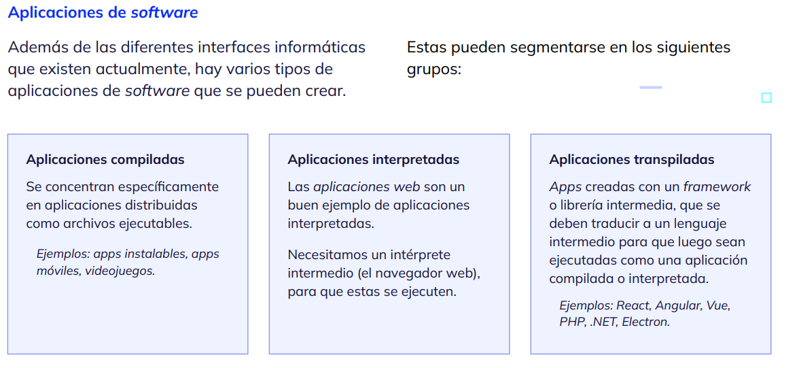Lenguajes de programación
Se trata de un lenguaje formal con reglas estrictas de escritura, que permite comunicarle a una computadora qué es lo que debe hacer con absoluto detalle. Todo lenguaje de programación se conforma por un conjunto de símbolos, signos de puntuación, operadores, valores, palabras clave e identificadores que permiten escribir las instrucciones a ejecutar. A través de los lenguajes de programación es posible crear programas. Existen docenas de lenguajes de programación, muchos son similares entre sí, también tienen algunas diferencias.
JavaScript como lenguaje de programación
JavaScript es el centro de todo porque es un
lenguaje de programación interpretado por el
propio navegador (Chrome, Firefox, Opera, IE, y
otros), sin necesidad de nada más en absoluto.
La web domina el mundo de la tecnología,
desde la creación de interfaces para fábricas de
autos, cajeros automáticos, o simplemente
aplicaciones para lograr que los empleados
puedan desde cualquier lugar donde hay
conexión a Internet resolver cualquier problema
laboral o trabajar sin necesidad de movilizarse.
Esto reduce costos y mejora el rendimiento.
Entre las tantas cosas que podemos hacer con
JavaScript se pueden mencionar:
● Abrir cuadros de diálogo.
● Mostrar mensajes.
● Validar datos en un formulario.
● Hacer una galería de imágenes.
Los documentos HTML cuentan con una etiqueta <script>, que permite definir código JS. Si bien se puede implementar en pruebas de código rápidas, desde 1999 se recomienda crear y escribir código JS en archivos dedicados, y nunca en un documento HTML. Esto hace más fácil el mantenimiento del código JS, utilizado en múltiples documentos HTML.
Para crear un archivo JavaScript, antes de comenzar a escribir la lógica de las aplicaciones, se debe contar con un documento HTML. Los archivos JS se referencian dentro del encabezado <head> de los documentos HTML. El atributo defer, que acompaña al archivo JS, solo es necesario incluirlo cuando interactuemos desde JS con elementos HTML. Siempre conviene crear subcarpetas dedicadas, para mantener ordenado los diferentes tipos de archivos que conforman a un proyecto
Al igual que casi todos los lenguajes de programación, JS permite dejar comentarios de texto intercalados con el código. Estos comentarios se pueden crear como de una sola línea //. Si se debe escribir un contenido más extenso, es posible recurrir a la combinación de caracteres que permite escribir múltiples líneas de comentarios /* */.
Los comentarios sirven para hacer anotaciones que permitan entender, en una lectura rápida, qué es lo que realiza determinado algoritmo. Estos caracteres dedicados, también son útiles para comentar código que no deseamos que se ejecute.
Para programar aplicaciones, JS ofrece una serie de herramientas integradas que ayudan a analizar y trabajar de manera más eficiente. Las herramientas se dividen en dos categorías: ● cuadros de diálogo. ● herramientas de consola. Su uso principal es poder analizar y depurar nuestras aplicaciones.
JavaScript es un lenguaje de programación que evoluciona todos los años, ininterrumpidamente, desde el año 2015. En la versión conocida como EcmaScript v6, lanzada ese mismo año, transformó a opcional el uso del punto y coma “;” para finalizar cada sentencia JS. Está en nosotros usarlo o no. En algunos casos dará claridad en la lectura de la sintaxis, delimitando dónde comienza y dónde termina.
JavaScript console es un objeto, nativo de este lenguaje, que cuenta con una serie de métodos incorporados que permiten sacar provecho al momento de analizar el código o comportamiento de estas aplicaciones. La mayoría de sus métodos arrojan resultados en la pestaña Console de las Herramientas para el Desarrollador (DevTools)
El método console.log() permite visualizar un mensaje definido, en la Consola JS. El texto puede provenir de un texto definido manualmente por nosotros, o desde el valor contenido en una variable o constante
console.warn() El método console.warn() visualiza también un mensaje en la Consola JS con un énfasis de color refiriendo a un tipo de mensaje de advertencia. A su vez, incorpora el ícono de alerta, para que le prestemos más atención al mismo al identificarlo en la consola JS.
console.error() El método console.error() visualiza también un mensaje en la Consola JS, pero con un énfasis de color refiriendo a un tipo de mensaje de error.
console.table() El método console.table() es de gran utilidad para representar en pantalla datos tabulares. Por ejemplo, cuando se trabaja con arrays de elementos, arrays de objetos, u objetos literales, que contienen múltiples datos, son mejor representados por este método que por console.log().
Variables
Una variable es un elemento que permite almacenar o guardar información para ser utilizada nuevamente. Cuando se incorporan variables en una aplicación web, y esta se ejecuta, reserva un espacio en la memoria de la computadora o dispositivo, donde deja disponible la variable con el valor que se le haya asignado.
Una variable, tal como su nombre lo indica, puede “variar” el valor almacenado en ella, en cualquier momento que se decida o que la aplicación web lo requiera, a través de su lógica. JavaScript, en particular, es un lenguaje de programación de tipado débil, lo cual indica que una variable puede contener un dato determinado, y luego cambiarlo por otro tipo de dato y valor completamente diferente. Aún así, esto último no es algo que suceda a menudo
Las variables se declaran anteponiendo la palabra reservada let, seguido del nombre “identificativo” que le daremos a la variable. Este nombre debe identificar su valor almacenado. Para asignar un valor, en el mismo momento en que la declaramos, se agrega el operador de asignación igual = y luego el valor deseado
En JavaScript, se pueden declarar variables con las palabras clave var y let, según el alcance que se desea definir para esa variable. A partir de la versión ES6 (año 2015), se insiste en priorizar el uso de let para declarar variables, ya que ofrece un alcance de bloque más claro y menos propenso a errores.
Las constantes, son una especie de variable que también ocupan un espacio en memoria, y permiten almacenar un valor específico para ser utilizado dentro de nuestra aplicación web. Se declaran al anteponer la palabra reservada const.
A diferencia de una variable declarada con let, las constantes no permiten cambiar el valor que se le haya asignado. Tal como su nombre lo indica, el valor inicial que le asignemos será “un valor constante”, durante todo el ciclo de vida de nuestra aplicación. Si intentamos cambiar su valor predefinido, la constante arrojará un error y no realizará el cambio forzado
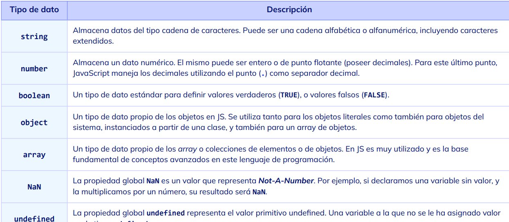Un array es un tipo de variable que permite almacenar múltiples valores en lugar de uno solo. Este tipo de dato facilita la agrupación de valores que tienen algo en común. ● De esta forma, se pueden concentrar todos en un único lugar. Esto hará que sean mucho más fácil de acceder. Los arrays tienen un poder y un valor importante en la construcción cotidiana de aplicaciones JavaScript
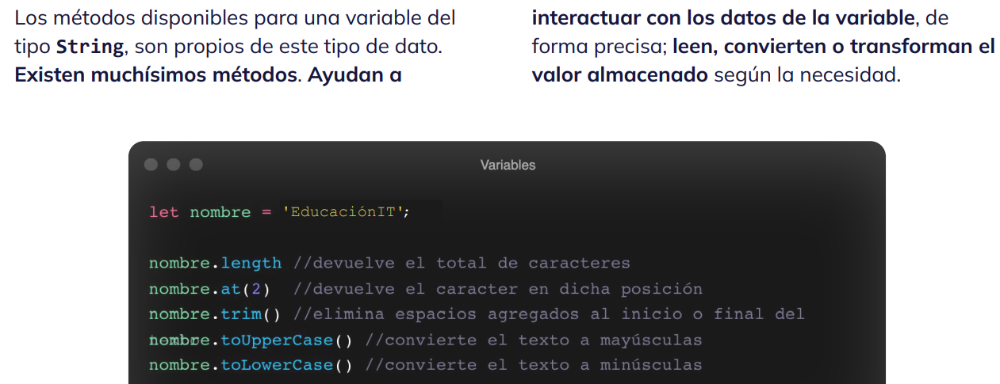 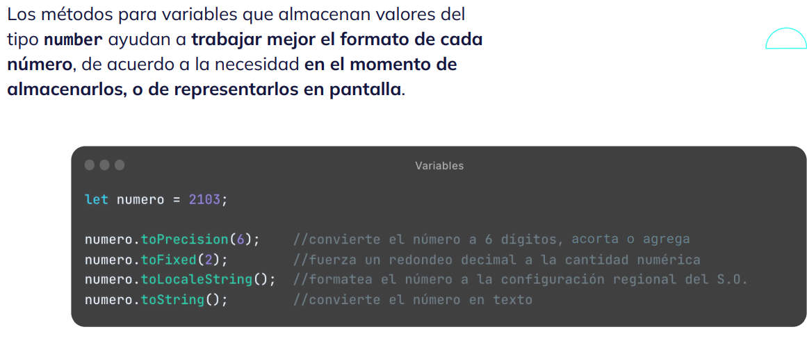Operadores
os operadores son símbolos o palabras clave que se utilizan para realizar manipulaciones sobre valores y variables. Estas operaciones pueden incluir: aritmética, comparación, asignación, lógica, entre otras. Los operadores son fundamentales para construir expresiones y sentencias. Al combinar variables, constantes y valores literales con operadores, es posible: realizar cálculos, evaluar condiciones y realizar diversas acciones en un programa.
● El operador de asignación se utiliza para guardar un valor en una variable. Ya lo hemos utilizado previamente. Veamos el ejemplo contiguo: ● El operador de incremento se indica mediante el prefijo ++. Incrementa la variable en una unidad, tal como se muestra en la segunda imagen. ● El operador de decremento se indica mediante el prefijo --. Decrementa la variable en una unidad.
JavaScript permite realizar operaciones matemáticas: ● suma (+), ● resta (-), ● multiplicación (*) y ● división (/).
El operador + se utiliza también para concatenar valores del tipo String. Puede ser útil para concatenar dos tipos de datos String en un único valor, o para concatenar un tipo de dato String y un tipo de dato Number, indistintamente del orden en el que se defina.
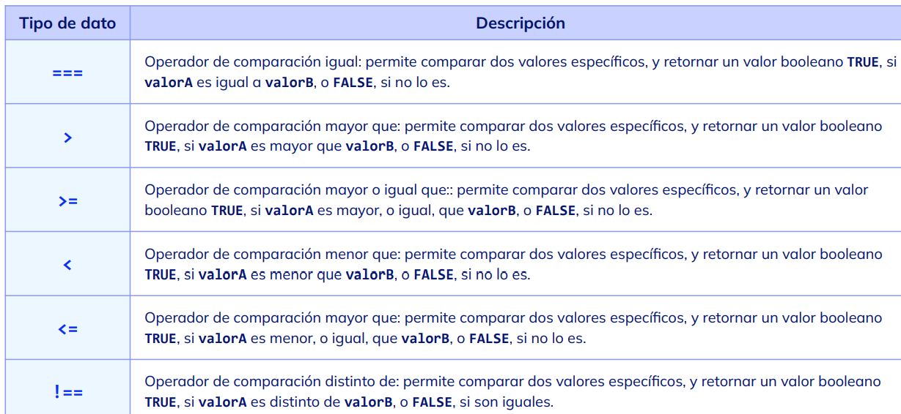Operadores lógicos
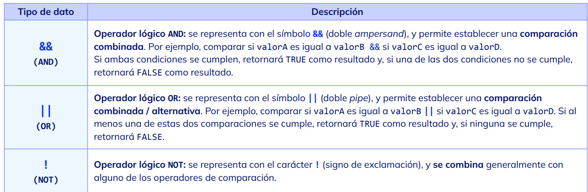alert() Muestra un cuadro de diálogo llamado alert(), en la página web desde donde se invoca. Se utiliza para mostrar un mensaje al usuario, en forma de mensaje de una sola vía (el usuario no puede interactuar, solo puede pulsar el botón Aceptar, para cerrarlo). Todo el código JS que esté escrito a continuación de este cuadro de diálogo, no se ejecutará hasta tanto el usuario pulse el botón en cuestión.
confirm() Esta sentencia muestra un cuadro de diálogo emergente con dos botones (Aceptar - Cancelar). El usuario puede pulsar cualquiera de las dos opciones. Se captura la decisión del usuario y se aplica en la lógica del código. Para capturar la selección del usuario, se debe anteponer una variable o constante a la invocación del cuadro de diálogo confirm().
prompt() Esta sentencia muestra un cuadro de diálogo emergente con dos botones (Aceptar - Cancelar), más una caja de texto. A través de esta, el usuario podrá ingresar un dato de cualquier tipo. Lo que allí se ingrese se define como término de entrada, y podrá ser capturado por el código JavaScript y utilizado internamente. Para esto último, también se debe anteponer una variable donde capturar el texto ingresado por el usuario.
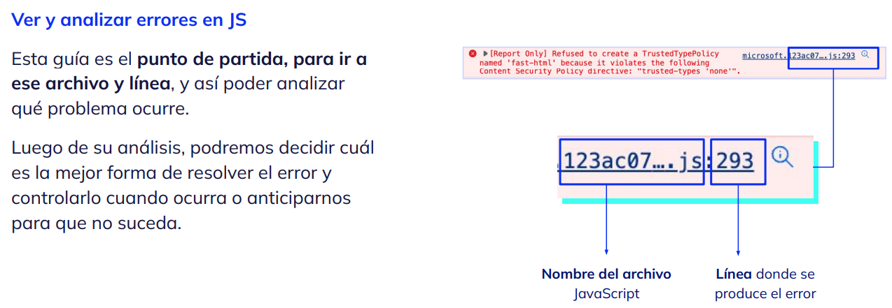JavaScript brinda muchas formas de controlar errores. La más apropiada es mediante el uso de un bloque conocido como try-catch. Esta estructura se utiliza para manejar excepciones o errores que pueden ocurrir durante la ejecución de un bloque de código. Permite proteger ciertas partes del código que pueden generar errores y capturar esas excepciones para realizar una acción específica en caso de que ocurran.
Cuando se ejecuta un bloque de código dentro del try, si ocurre una excepción, en lugar de detener todo el programa, se captura el error y se ejecuta el bloque catch. Dentro del bloque catch, se puede acceder al objeto error, que contiene información sobre la excepción que se produjo, como el tipo de error y el mensaje asociado.